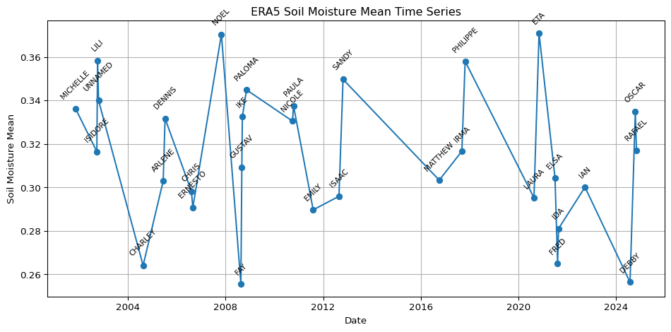

Code
import pandas as pd
import ocha_stratus as stratus
from src.datasources import imerg, ibtracs, zma, codab
from src.constants import *ERA5-Land daily soil moisture averaged over Cuba, on the landfall dates of past storms. The values were extracted with Google Earth Engine. Those cells are not run when the book renders: they were run once and the result saved to blob storage, which is loaded here and plotted.
import pandas as pd
import ocha_stratus as stratus
from src.datasources import imerg, ibtracs, zma, codab
from src.constants import *import ee
import geemap
ee.Authenticate(auth_mode="gcloud")
ee.Initialize()adm0 = codab.load_codab_from_blob()
adm0 = adm0[["ADM0_ES", "ADM0_PCODE", "geometry"]]blob_name = f"{PROJECT_PREFIX}/processed/ibtracs/zma_tracks_2000-2024.parquet"
df_ibtracs = stratus.load_parquet_from_blob(blob_name)df_ibtracs_agg = (
df_ibtracs[df_ibtracs["landfall"]]
.groupby("sid")
.agg(
valid_time_min=("valid_time", "min"),
valid_time_max=("valid_time", "max"),
wind_speed_max=("wind_speed", "max"),
)
.reset_index()
)# was having issues w/ this so i just got the FC from FAO which
# is already on earth engine
# geemap.geojson_to_ee(geojson)
# geojson = adm0.to_json()
# ee_feature_collection = geemap.geojson_to_ee(geojson)
fc_adm0 = ee.FeatureCollection('FAO/GAUL/2015/level0').filter(ee.Filter.eq('ADM0_NAME', 'Cuba'))
# Load ERA5 Daily Soil Moisture dataset
ic = ee.ImageCollection("ECMWF/ERA5_LAND/DAILY_AGGR")
bands = [
"volumetric_soil_water_layer_1",
"volumetric_soil_water_layer_2",
"volumetric_soil_water_layer_3",
"volumetric_soil_water_layer_4"
]
ic_sub_bands = ic.select(bands)
# Function to compute mean across the four soil moisture bands for each image
def mean_soil_moisture(img):
mean_img = img.select(bands).reduce(ee.Reducer.mean()).rename("soil_moisture_mean")
return mean_img.copyProperties(img, img.propertyNames())
# Map the function over the collection to retain an ImageCollection of mean images
ic_mean_sm = ic_sub_bands.map(mean_soil_moisture).filterBounds(fc_adm0)
# Print info for the first image to verify
first_img = ic_mean_sm.first()
print(first_img.getInfo())Filter collection to storm dates
# Add a 'valid_date_min' property (YYYY-MM-DD) to each image in the collection
def add_valid_date_min(img):
date_str = ee.Date(img.get("system:time_start")).format("yyyy-MM-dd")
return img.set("valid_date_min", date_str)
# Map to add the property
temp_ic = ic_mean_sm.map(add_valid_date_min)
# Now filter using the new property and the list of storm dates
storm_dates = df_ibtracs_agg["valid_time_min"].dt.strftime("%Y-%m-%d").tolist()
storm_dates_ee = ee.List(storm_dates)
ic_sm_storm_date = temp_ic.filter(
ee.Filter.inList("valid_date_min", storm_dates_ee)
)
print("Filtered collection size:", ic_sm_storm_date.size().getInfo())
ic_sm_storm_datedf_mean = geemap.zonal_stats(
ic_sm_storm_date, fc_adm0, stat_type="MEAN", scale=10000
)# i thought the above would save in memory as data.frame, but i guess not.
# will look more into gee.zonal_stats() at a later point
df_mean = pd.read_csv("zonal_stats.csv")# Pivot all columns ending with '_soil_moisture_mean' to long format and parse dates
value_vars = [
col for col in df_mean.columns if col.endswith("_soil_moisture_mean")
]
# Keep only columns in value_vars plus ADM0_NAME before melting
cols_to_keep = value_vars + [
col for col in df_mean.columns if col == "ADM0_NAME"
]
df_mean_sub = df_mean[cols_to_keep]
# Use melt to reshape to long format
if value_vars:
df_long = pd.melt(
df_mean_sub,
id_vars=[col for col in df_mean_sub.columns if col not in value_vars],
value_vars=value_vars,
var_name="parameter",
value_name="value",
)
# Extract date from 'parameter' column (e.g., '20011104_soil_moisture_mean')
df_long["date"] = pd.to_datetime(
df_long["parameter"].str.extract(r"(\d{8})")[0],
format="%Y%m%d",
errors="coerce",
)
else:
df_long = df_mean_sub.copy()
df_long = df_long[
["date", "parameter", "value"]
+ [
col
for col in df_long.columns
if col not in ["date", "parameter", "value"]
]
]
df_long["parameter"] = "Soil Moisture Mean"
df_long.head() # Show preview of the resultStorm names from IBTrACS, to label the plot:
df_storms = ibtracs.load_storms()
# Filter df_storms to only sids present in df_ibtracs_agg
df_storms_cuba= df_storms[df_storms["sid"].isin(df_ibtracs_agg["sid"])]
# Join the "name" column from df_storms to df_ibtracs_agg by "name"
df_ibtracs_agg_labelled = df_ibtracs_agg.merge(
df_storms[["sid", "name"]], on="sid", how="left"
)
# df_long = df_long.merge(
# df_storms_cuba[["sid", "name"]], left_on="parameter", right_on="sid", how="left"
# )
# Create a 'date' column in df_ibtracs_agg_labelled by converting 'valid_time_min' to date
df_ibtracs_agg_labelled["date"] = pd.to_datetime(df_ibtracs_agg_labelled["valid_time_min"]).dt.date
# Also ensure df_long["date"] is of type date (not datetime)
df_long["date"] = pd.to_datetime(df_long["date"]).dt.date
# Merge 'name' from df_ibtracs_agg_labelled into df_long by 'date'
df_long_labelled = df_long.merge(
df_ibtracs_agg_labelled[["date", "name"]],
on="date",
how="left"
)df_storms.head()| storm_id | sid | atcf_id | season | number | name | provisional | created_at | |
|---|---|---|---|---|---|---|---|---|
| 0 | 0eae9884-5a95-427e-813f-24b6948adfc8 | 1842298N11080 | None | 1842 | 1 | UNNAMED | False | 2025-05-13 23:12:11.828324 |
| 1 | 654c51b2-e783-4ebc-9089-d760f2550a19 | 1845336N10074 | None | 1845 | 1 | UNNAMED | False | 2025-05-13 23:12:11.828324 |
| 2 | 78e5587a-6792-4336-81f3-ab3a2fda026c | 1848011S09079 | None | 1848 | 1 | UNNAMED | False | 2025-05-13 23:12:11.828324 |
| 3 | fb2cdc51-02c3-42a2-a22a-5a9dd37da2c7 | 1848011S09080 | None | 1848 | 2 | UNNAMED | False | 2025-05-13 23:12:11.828324 |
| 4 | 3a0add51-96ee-4a7f-934d-bf0f599673ed | 1848011S15057 | None | 1848 | 3 | UNNAMED | False | 2025-05-13 23:12:11.828324 |
import matplotlib.pyplot as plt
plt.figure(figsize=(10, 5))
plt.plot(
df_long_labelled["date"],
df_long_labelled["value"],
marker="o",
linestyle="-",
)
plt.xlabel("Date")
plt.ylabel("Soil Moisture Mean")
plt.title("ERA5 Soil Moisture Mean Time Series")
plt.grid(True)
plt.tight_layout()
for i, row in df_long_labelled.iterrows():
if pd.notnull(row["name"]):
plt.annotate(
row["name"],
(row["date"], row["value"]),
textcoords="offset points",
xytext=(0, 10),
ha="center",
fontsize=8,
rotation=45,
)
plt.show()